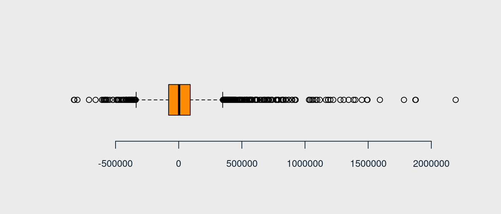

[1] 21613 21That was my very first project “bespoke” with real dataset and the nice job of predicting the price of a house.
I have used three models: Regression, Support Vector Regression and Random Forest. It is not hard to guess which one was the best üôÉ I made a lot of beginner mistakes, but I have a lot of sentiment for this project.
1 DATA
1.1 Source
According to the instruction from Client - only columns with no 1:15 should be used for model building purposes, that is:
| name | type | description |
|---|---|---|
| id | str | database identifier of the current row |
| date | str | pricing date |
| price | float | the price |
| bedrooms | float | number of bedrooms |
| bathrooms | float | number of bathrooms |
| sqft_living | float | living space area |
| sqft_lot | int | lot area |
| floors | float | number of floors |
| waterfront | int | indicator of whether the property is facing water {0,1} |
| view | int | quality of view from the property (0:4) |
| condition | int | property condition (1:5) |
| grade | int | property grade (1:13) |
| sqft_above | int | living area above ground level |
| sqft_basement | int | area of basement |
| yr_built | int | year the building was built |
Size of dataset
1.2 A quick look at the dataset
FIRST OBSERVATION ABOUT DATA SET
variables waterfront, view, condition and grade are the categorical type variable (Factor),
variable date has to be change to date type,
to consideration: variable yr_built has to be change to date type,
to consideration: variable id has to be in normal not scientific format,
question: why variable bathrooms - number of bathrooms - has not integer value?
question: why variable floors - number of floor - has not integer value? (mezzanine?)
question: what describes variable condition? is that the expert opinion (subjective) or same evaluation made on an objective scale?
question: what has coded variable grade?
quite good correlation (DV): price ~ sqft_living, price ~ grade, price ~ sqft_above
very strong correlation: sqft_above ~ sqft_living (are they dependant?),
quite good correlation: sqft_above ~ bathrooms, sqft_living ~ grade, sqft_above ~ grade, bathrooms ~ grade, bathrooms ~ sqft_above
TYPES OF VARIABLES
variable - object identifier: id
dependent variable - continuous variable: price
independent variable - numerical variable (discrete): date, bedrooms, bathrooms, floors, yr_built
independent variable - numerical variable (continuous): sqft_living, sqft_lot, sqft_above, sqft_basement
independent variable - categorical variable (nominal): waterfront, view, grade
independent variable - categorical variable (probably ordinal): condition
1.3 NAs check
Checking if any NAs are in the data
[1] FALSE2 EDA
2.1 Variable price
plot_boxplot(df_house$price/1000, xlab = "price [k$]")plot_hist(df_house$price/1000, xlab = "price [k$]", stat_flag = c(TRUE, TRUE, FALSE), breaks = 80)
grid()2.2 Variable date
Bulid new variable - the proper format of date for variable date
df_house$date_pro <- as.Date(df_house$date, "%Y%m%dT000000")The most priced home - offer with id no 142 from data 53
plot_barplot_with_stat(table(df_house$date_pro),
ylim = c(0, 160), ylab = "count", border = col_main_2)REMARKS During summer months much more houses are valued than at the beginning of the year (winter).
Buliding new variable - date_Ym built only on information about year and month of pricing date
df_house$date_Ym <- strftime(as.Date(df_house$date, "%Y%m%dT000000"), "%Y-%m")
head(df_house$date_Ym)[1] "2014-10" "2014-12" "2015-02" "2014-12" "2015-02" "2014-05"plot_barplot_with_stat(table(df_house$date_Ym), ylim = c(0, 2500), ylab = "count", fg_r = 10)2.3 Variable id
Changing scientific format of id to more user friendly character format
format(df_house$id, scientific = FALSE)[1:10] [1] "7129300520" "6414100192" "5631500400" "2487200875" "1954400510"
[6] "7237550310" "1321400060" "2008000270" "2414600126" "3793500160"df_house$id <- format(df_house$id, scientific = FALSE) %>% stringr::str_trim()Is there are no duplicated items TRUE
NOTE there are 177 duplicated ids!
Example
filter(df_house, id == 1000102) id date price bedrooms bathrooms sqft_living sqft_lot floors
1 1000102 20140916T000000 280000 6 3 2400 9373 2
2 1000102 20150422T000000 300000 6 3 2400 9373 2
waterfront view condition grade sqft_above sqft_basement yr_built
1 0 0 3 7 2400 0 1991
2 0 0 3 7 2400 0 1991
yr_renovated zipcode lat long sqft_living15 sqft_lot15 date_pro
1 0 98002 47.3262 -122.214 2060 7316 2014-09-16
2 0 98002 47.3262 -122.214 2060 7316 2015-04-22
date_Ym
1 2014-09
2 2015-04filter(df_house, id == 7200179) id date price bedrooms bathrooms sqft_living sqft_lot floors
1 7200179 20141016T000000 150000 2 1 840 12750 1
2 7200179 20150424T000000 175000 2 1 840 12750 1
waterfront view condition grade sqft_above sqft_basement yr_built
1 0 0 3 6 840 0 1925
2 0 0 3 6 840 0 1925
yr_renovated zipcode lat long sqft_living15 sqft_lot15 date_pro
1 0 98055 47.484 -122.211 1480 6969 2014-10-16
2 0 98055 47.484 -122.211 1480 6969 2015-04-24
date_Ym
1 2014-10
2 2015-04filter(df_house, id == 109200390) id date price bedrooms bathrooms sqft_living sqft_lot
1 109200390 20140820T000000 245000 3 1.75 1480 3900
2 109200390 20141020T000000 250000 3 1.75 1480 3900
floors waterfront view condition grade sqft_above sqft_basement yr_built
1 1 0 0 4 7 1480 0 1980
2 1 0 0 4 7 1480 0 1980
yr_renovated zipcode lat long sqft_living15 sqft_lot15 date_pro
1 0 98023 47.2977 -122.367 1830 6956 2014-08-20
2 0 98023 47.2977 -122.367 1830 6956 2014-10-20
date_Ym
1 2014-08
2 2014-10REMARK Only one diffrence in duplicated item is variable date (also new built based on it - date_pro and date_Ym) and variable price (?)
List of duplicate ids with price and date of pricing date_pro (for analysis what is different)
filter(df_house, id %in% ls_dup_id) %>% select(id, price, date_pro) %>% head(10) id price date_pro
1 6021501535 430000 2014-07-25
2 6021501535 700000 2014-12-23
3 4139480200 1384000 2014-06-18
4 4139480200 1400000 2014-12-09
5 7520000520 232000 2014-09-05
6 7520000520 240500 2015-03-11
7 3969300030 165000 2014-07-23
8 3969300030 239900 2014-12-29
9 2231500030 315000 2014-10-01
10 2231500030 530000 2015-03-24filter(df_house, id %in% ls_dup_id) %>% select(date_Ym) %>% table()date_Ym
2014-05 2014-06 2014-07 2014-08 2014-09 2014-10 2014-11 2014-12 2015-01 2015-02
21 27 24 29 25 28 21 27 23 30
2015-03 2015-04 2015-05
40 42 16 Checking number of duplicates (there can be some triplicate)
filter(df_house, id %in% ls_dup_id) %>%
select(id) %>% table() %>%
plot(xaxt = "n", col = c(col_grey, col_main_2)[1+(. == max(.))],
las = 1, frame = FALSE, cex.axis = 0.8)Some items occure 3 times - checking:
filter(df_house, id %in% ls_dup_id) %>% select(id) %>% table() %>% which.max()795000620
144 filter(df_house[1:15], id == 795000620) id date price bedrooms bathrooms sqft_living sqft_lot
1 795000620 20140924T000000 115000 3 1 1080 6250
2 795000620 20141215T000000 124000 3 1 1080 6250
3 795000620 20150311T000000 157000 3 1 1080 6250
floors waterfront view condition grade sqft_above sqft_basement yr_built
1 1 0 0 2 5 1080 0 1950
2 1 0 0 2 5 1080 0 1950
3 1 0 0 2 5 1080 0 1950REMARK Each time the price is different!
Minor df: data frame with duplicated ids (for comparision how the price changes)
df_dup_id <- filter(df_house, id %in% ls_dup_id, id != 795000620) %>% select(id, price, date_pro) Minor df: data frame with difference between price of houses with duplicate ids
3 items were pricing twice and the price of the house wasn’t changed => should they be treated as duplicates?
filter(df_delta_dup_id, delta == 0) %>% nrow() [1] 3filter(df_delta_dup_id, delta == 0)[ , 1] [1] "1825069031" "6308000010" "8648900110"6 items were pricing twice and the price of the house has dropped over time
filter(df_delta_dup_id, delta < 0) %>% nrow() [1] 6filter(df_delta_dup_id, delta < 0)[ , 1] [1] "8682262400" "2726049071" "4139420590" "2767603612" "7167000040"
[6] "2619920170"166 items were pricing twice and the price of the house has increased over time
filter(df_delta_dup_id, delta > 0) %>% nrow() [1] 166filter(df_house[ , c(1:15,22:23)], id %in% filter(df_delta_dup_id, delta < 0)[ , 1]) id date price bedrooms bathrooms sqft_living sqft_lot
1 8682262400 20140718T000000 430000 2 1.75 1350 4003
2 8682262400 20150513T000000 419950 2 1.75 1350 4003
3 2726049071 20141211T000000 510000 2 1.00 820 4206
4 2726049071 20150408T000000 489950 2 1.00 820 4206
5 4139420590 20140520T000000 1212500 4 3.50 4560 16643
6 4139420590 20140827T000000 1200000 4 3.50 4560 16643
7 2767603612 20140512T000000 500000 2 2.25 1290 1334
8 2767603612 20150113T000000 489000 2 2.25 1290 1334
9 7167000040 20140813T000000 740000 4 3.00 3350 199253
10 7167000040 20150305T000000 700000 4 3.00 3350 199253
11 2619920170 20141001T000000 772500 4 2.50 3230 4290
12 2619920170 20141219T000000 765000 4 2.50 3230 4290
floors waterfront view condition grade sqft_above sqft_basement yr_built
1 1 0 0 3 8 1350 0 2004
2 1 0 0 3 8 1350 0 2004
3 1 0 0 3 5 820 0 1949
4 1 0 0 3 5 820 0 1949
5 1 0 3 3 12 2230 2330 1995
6 1 0 3 3 12 2230 2330 1995
7 3 0 0 3 8 1290 0 2007
8 3 0 0 3 8 1290 0 2007
9 2 0 0 3 10 3350 0 2004
10 2 0 0 3 10 3350 0 2004
11 2 0 0 3 9 3230 0 2004
12 2 0 0 3 9 3230 0 2004
date_pro date_Ym
1 2014-07-18 2014-07
2 2015-05-13 2015-05
3 2014-12-11 2014-12
4 2015-04-08 2015-04
5 2014-05-20 2014-05
6 2014-08-27 2014-08
7 2014-05-12 2014-05
8 2015-01-13 2015-01
9 2014-08-13 2014-08
10 2015-03-05 2015-03
11 2014-10-01 2014-10
12 2014-12-19 2014-12DUPLICATED? the same price - diffrent pricing date
filter(df_house[ , c(1:15,22:23)], id %in% filter(df_delta_dup_id, delta == 0)[ , 1]) id date price bedrooms bathrooms sqft_living sqft_lot
1 1825069031 20140814T000000 550000 4 1.75 2410 8447
2 1825069031 20141016T000000 550000 4 1.75 2410 8447
3 6308000010 20141208T000000 585000 3 2.50 2290 5089
4 6308000010 20150423T000000 585000 3 2.50 2290 5089
5 8648900110 20140505T000000 555000 3 2.50 1940 3211
6 8648900110 20140826T000000 555000 3 2.50 1940 3211
floors waterfront view condition grade sqft_above sqft_basement yr_built
1 2 0 3 4 8 2060 350 1936
2 2 0 3 4 8 2060 350 1936
3 2 0 0 3 9 2290 0 2001
4 2 0 0 3 9 2290 0 2001
5 2 0 0 3 8 1940 0 2009
6 2 0 0 3 8 1940 0 2009
date_pro date_Ym
1 2014-08-14 2014-08
2 2014-10-16 2014-10
3 2014-12-08 2014-12
4 2015-04-23 2015-04
5 2014-05-05 2014-05
6 2014-08-26 2014-08REMARKS In dataset are 177 items that have duplicated id (exception id = 795000620 listed 3 times) - the diffrence is only in variable date and price (with 3 exception where the price is the same). In the model, the variable id will not be used, so it is important to decide how to deal with these duplicates.
PROPOSAL: cancel only second item with the same id from the ids’ list with the same price and diffrent pricing date.
Bulid new variable - indicators of whether to delete the given item
List of duplicated items - houses for that the price is the same on diffrent pricing date
(ls_rm_3id <- filter(df_house, id %in% filter(df_delta_dup_id, delta == 0)[ , 1]) %>%
filter(row_number() %% 2 == 0)) id date price bedrooms bathrooms sqft_living sqft_lot
1 1825069031 20141016T000000 550000 4 1.75 2410 8447
2 6308000010 20150423T000000 585000 3 2.50 2290 5089
3 8648900110 20140826T000000 555000 3 2.50 1940 3211
floors waterfront view condition grade sqft_above sqft_basement yr_built
1 2 0 3 4 8 2060 350 1936
2 2 0 0 3 9 2290 0 2001
3 2 0 0 3 8 1940 0 2009
yr_renovated zipcode lat long sqft_living15 sqft_lot15 date_pro
1 1980 98074 47.6499 -122.088 2520 14789 2014-10-16
2 0 98006 47.5443 -122.172 2290 7984 2015-04-23
3 0 98027 47.5644 -122.093 1880 3078 2014-08-26
date_Ym rm
1 2014-10 0
2 2015-04 0
3 2014-08 0df_house[df_house$id %in% ls_rm_3id$id, "rm"] <- 1Checked
filter(df_house, id %in% filter(df_delta_dup_id, delta == 0)[ , 1]) id date price bedrooms bathrooms sqft_living sqft_lot
1 1825069031 20140814T000000 550000 4 1.75 2410 8447
2 1825069031 20141016T000000 550000 4 1.75 2410 8447
3 6308000010 20141208T000000 585000 3 2.50 2290 5089
4 6308000010 20150423T000000 585000 3 2.50 2290 5089
5 8648900110 20140505T000000 555000 3 2.50 1940 3211
6 8648900110 20140826T000000 555000 3 2.50 1940 3211
floors waterfront view condition grade sqft_above sqft_basement yr_built
1 2 0 3 4 8 2060 350 1936
2 2 0 3 4 8 2060 350 1936
3 2 0 0 3 9 2290 0 2001
4 2 0 0 3 9 2290 0 2001
5 2 0 0 3 8 1940 0 2009
6 2 0 0 3 8 1940 0 2009
yr_renovated zipcode lat long sqft_living15 sqft_lot15 date_pro
1 1980 98074 47.6499 -122.088 2520 14789 2014-08-14
2 1980 98074 47.6499 -122.088 2520 14789 2014-10-16
3 0 98006 47.5443 -122.172 2290 7984 2014-12-08
4 0 98006 47.5443 -122.172 2290 7984 2015-04-23
5 0 98027 47.5644 -122.093 1880 3078 2014-05-05
6 0 98027 47.5644 -122.093 1880 3078 2014-08-26
date_Ym rm
1 2014-08 1
2 2014-10 1
3 2014-12 1
4 2015-04 1
5 2014-05 1
6 2014-08 12.4 Variable bedrooms
plot_boxplot(df_house$bedrooms, xlab = "number of bedrooms")NOTE
According to the american standards for houses appraisal (given data set is a list of houses located in area of Seattle, state of Washington) bedroom must be of adequate size (100 square feet or more), have a closet, a window and a door. It must be heated/cooled and finished in the same quality as the rest of the house. It must also be above grade and have reasonable access to a full bathroom. Basement bedrooms (50% below adjacent grade level) may NOT be counted in the total bedrooms count.
OUTLIER OR MISTAKE ?
filter(df_house[ , c(1:15,22:24)], bedrooms == 33) id date price bedrooms bathrooms sqft_living sqft_lot
1 2402100895 20140625T000000 640000 33 1.75 1620 6000
floors waterfront view condition grade sqft_above sqft_basement yr_built
1 1 0 0 5 7 1040 580 1947
date_pro date_Ym rm
1 2014-06-25 2014-06 0Analysis of similar items (only one parameters)
REMARKS similar items (the same value for diffrent parameters: grade = 7, bathrooms = 1.75, sqft_living = 1620, floors = 1, price = 640000, yr_built = 1947) show that the most popular value for badrooms is 3.
Analysis of similar items (all parametres)

DECISION: it is a mistake ⇒ 33 has to be change into 3
df_house[df_house$bedrooms == 33, 'bedrooms'] <- 3Re-analysis
table(df_house$bedrooms)
0 1 2 3 4 5 6 7 8 9 10 11
13 199 2760 9825 6882 1601 272 38 13 6 3 1 summary(df_house$bedrooms) Min. 1st Qu. Median Mean 3rd Qu. Max.
0.000 3.000 3.000 3.369 4.000 11.000 plot_boxplot(df_house$bedrooms, xlab = "number of bedrooms", stat_flag = c(TRUE, FALSE, FALSE))plot_barplot_with_stat(table(df_house$bedrooms), stat_flag = c(TRUE, FALSE, FALSE), fg_r = 100)ARE THESE DATA PROPER? to consideration: removing these items
filter(df_house[ , c(1:15,22:24)], bedrooms == 0) id date price bedrooms bathrooms sqft_living sqft_lot
1 6306400140 20140612T000000 1095000 0 0.00 3064 4764
2 3918400017 20150205T000000 380000 0 0.00 1470 979
3 1453602309 20140805T000000 288000 0 1.50 1430 1650
4 6896300380 20141002T000000 228000 0 1.00 390 5900
5 2954400190 20140624T000000 1295650 0 0.00 4810 28008
6 2569500210 20141117T000000 339950 0 2.50 2290 8319
7 2310060040 20140925T000000 240000 0 2.50 1810 5669
8 3374500520 20150429T000000 355000 0 0.00 2460 8049
9 7849202190 20141223T000000 235000 0 0.00 1470 4800
10 7849202299 20150218T000000 320000 0 2.50 1490 7111
11 9543000205 20150413T000000 139950 0 0.00 844 4269
12 1222029077 20141029T000000 265000 0 0.75 384 213444
13 3980300371 20140926T000000 142000 0 0.00 290 20875
floors waterfront view condition grade sqft_above sqft_basement yr_built
1 3.5 0 2 3 7 3064 0 1990
2 3.0 0 2 3 8 1470 0 2006
3 3.0 0 0 3 7 1430 0 1999
4 1.0 0 0 2 4 390 0 1953
5 2.0 0 0 3 12 4810 0 1990
6 2.0 0 0 3 8 2290 0 1985
7 2.0 0 0 3 7 1810 0 2003
8 2.0 0 0 3 8 2460 0 1990
9 2.0 0 0 3 7 1470 0 1996
10 2.0 0 0 3 7 1490 0 1999
11 1.0 0 0 4 7 844 0 1913
12 1.0 0 0 3 4 384 0 2003
13 1.0 0 0 1 1 290 0 1963
date_pro date_Ym rm
1 2014-06-12 2014-06 0
2 2015-02-05 2015-02 0
3 2014-08-05 2014-08 0
4 2014-10-02 2014-10 0
5 2014-06-24 2014-06 0
6 2014-11-17 2014-11 0
7 2014-09-25 2014-09 0
8 2015-04-29 2015-04 0
9 2014-12-23 2014-12 0
10 2015-02-18 2015-02 0
11 2015-04-13 2015-04 0
12 2014-10-29 2014-10 0
13 2014-09-26 2014-09 0REMARKS Basement bedrooms (50% below adjacent grade level) may NOT be counted in the total bedrooms count, but none of these items have basement. It’s also possible that some of them do not meet with the requirements.
2.5 Variable floors
plot_boxplot(df_house$floors, xlab = "number of floors")NOTE According to the american standards for houses appraisal (given data set is a list of houses located in area of Seattle, state of Washington) attics and mezzanine should be count as half floor. So the data - even if the number of floor isn’t integer - should be considered as correct. Basement should NOT be counted in the total floor count.
plot_barplot_with_stat(table(df_house$floors), stat_flag = c(TRUE, TRUE, FALSE), fg_r = 100)2.6 Variable waterfront
plot_barplot(table(df_house$waterfront), xlab = "indicator of whether the property is facing water",
names.arg = c("no facing water", "facing water"))REMARKS Almost no house (only 0,7% of all) has a view of the water, what is quite interesting in the Seattle (port city).
2.7 Variable view
plot_barplot(table(df_house$view), xlab = "quality of view from the property")2.8 Variable condition
plot_barplot(table(df_house$condition),xlab = "property condition")2.9 Variable grade
plot_barplot(table(df_house$grade), xlab = "property grade")Analysis: is the grade dependant of floors?
REMARKS correlation grade ~ floor is not really strong (0.46), but correlation price ~ grade is strong (0.67).
2.10 Variable yr_built
plot_barplot(table(df_house$yr_built), xlab = "year the building was built", las = 2)yr_builtAnalysis: is the price dependant of yr_built and condition?
REMARKS correlation yr_built ~ floor is not really strong (<0.05)
Curiose: how often happened the renovation?
df_house[df_house$yr_renovated - df_house$yr_built > 0, ] %>% select(yr_built) %>% table() yr_built
1900 1901 1902 1903 1904 1905 1906 1907 1908 1909 1910 1911 1912 1913 1914 1915
19 1 2 6 6 17 8 14 14 16 17 14 14 10 9 11
1916 1917 1918 1919 1920 1921 1922 1923 1924 1925 1926 1927 1928 1929 1930 1931
8 5 13 15 10 7 18 10 20 16 16 8 10 4 20 4
1932 1933 1934 1935 1936 1937 1938 1939 1940 1941 1942 1943 1944 1945 1946 1947
5 7 8 5 5 13 7 11 14 17 24 18 12 8 11 18
1948 1949 1950 1951 1952 1953 1954 1955 1956 1957 1958 1959 1960 1961 1962 1963
17 16 31 17 17 17 14 17 9 11 10 9 9 4 16 14
1964 1965 1966 1967 1968 1969 1970 1971 1972 1973 1974 1975 1976 1977 1978 1979
3 11 1 10 19 11 7 4 7 4 5 4 7 8 4 2
1980 1981 1982 1983 1984 1985 1986 1987 1988 1989 1990 1991 1996 1998 2003
6 3 2 4 3 1 2 3 2 1 1 1 2 2 1 Not really often: only 914/21613 (4.2%) of houses was renovated
filter(df_house, yr_renovated != 0) %>% nrow()[1] 914Bulid new variable: house_age - to solve a problem with difference of house age that is bind with different pricing date the price will be a function of one variable house_age and not of two variables date (pricing) and yr_built
NOTE That has also its consequences: after canceling date (pricing) and yr_built there will be not longer possible to analysis the price change according the month of pricing or differnce during the year.
plot_boxplot(df_house$house_age, xlab = "house age [yrs]")plot_barplot(table(df_house$house_age), xlab = "house age [yrs]")How many houses was priced in the year of its built?
filter(df_house, house_age == 0) %>% nrow() ## 430[1] 430filter(df_house, house_age < 0) id date price bedrooms bathrooms sqft_living sqft_lot
1 1832100030 20140625T000000 597326 4 4.00 3570 8250
2 3076500830 20141029T000000 385195 1 1.00 710 6000
3 9520900210 20141231T000000 614285 5 2.75 2730 6401
4 1250200495 20140624T000000 455000 2 1.50 1200 1259
5 2770601530 20140826T000000 500000 2 2.25 1570 1269
6 9126100346 20140617T000000 350000 3 2.00 1380 3600
7 9126100765 20140801T000000 455000 3 1.75 1320 1014
8 9310300160 20140828T000000 357000 5 2.50 2990 9240
9 1257201420 20140709T000000 595000 4 3.25 3730 4560
10 6058600220 20140731T000000 230000 3 1.50 1040 1264
11 5694500840 20141125T000000 559000 2 3.00 1650 960
12 6169901185 20140520T000000 490000 5 3.50 4460 2975
floors waterfront view condition grade sqft_above sqft_basement yr_built
1 2.0 0 0 3 10 2860 710 2015
2 1.5 0 0 3 6 710 0 2015
3 2.0 0 0 3 8 2730 0 2015
4 2.0 0 0 3 8 1000 200 2015
5 2.0 0 0 3 9 1280 290 2015
6 3.0 0 0 3 8 1380 0 2015
7 3.0 0 0 3 9 1320 0 2015
8 2.0 0 0 3 8 2990 0 2015
9 2.0 0 0 3 9 2760 970 2015
10 2.0 0 0 3 9 900 140 2015
11 3.0 0 0 3 8 1350 300 2015
12 3.0 0 2 3 10 3280 1180 2015
yr_renovated zipcode lat long sqft_living15 sqft_lot15 date_pro
1 0 98040 47.5784 -122.226 2230 10000 2014-06-25
2 0 98144 47.5756 -122.316 1440 4800 2014-10-29
3 0 98072 47.7685 -122.160 2520 6126 2014-12-31
4 0 98144 47.6001 -122.298 1320 1852 2014-06-24
5 0 98199 47.6514 -122.385 1570 6000 2014-08-26
6 0 98122 47.6074 -122.305 1480 3600 2014-06-17
7 0 98122 47.6047 -122.305 1380 1495 2014-08-01
8 0 98133 47.7384 -122.348 1970 18110 2014-08-28
9 0 98103 47.6725 -122.330 1800 4560 2014-07-09
10 0 98144 47.5951 -122.301 1350 3000 2014-07-31
11 0 98103 47.6611 -122.346 1650 3000 2014-11-25
12 0 98119 47.6313 -122.370 2490 4231 2014-05-20
date_Ym rm house_age
1 2014-06 0 -1
2 2014-10 0 -1
3 2014-12 0 -1
4 2014-06 0 -1
5 2014-08 0 -1
6 2014-06 0 -1
7 2014-08 0 -1
8 2014-08 0 -1
9 2014-07 0 -1
10 2014-07 0 -1
11 2014-11 0 -1
12 2014-05 0 -1There are 12 items that have for house age with value equal -1. It’s possible that investor asked about pricing based on design - not based on really existing building. Not to put “strange data” into model and because it’s only 12 items (0.06% of all) the value -1 will be change into 0 (the houses that were priced in the same year that were also built).
Checked
df_house[df_house$house_age == -1, "house_age"] <- 0
filter(df_house, house_age == -1) %>% select(house_age) [1] house_age
<0 rows> (or 0-length row.names)Re-analysis
plot_boxplot(df_house$house_age, xlab = "")plot_barplot(table(df_house$house_age), xlab = "house age")New minor variable date_Y to check how the price is correlated with the pricing date?
df_house$date_Y <- as.numeric(strftime(as.Date(df_house$date, "%Y%m%dT000000"), "%Y"))REMARKS The price is not correlated with the pricing date so it was a good idea to build new variable house_age, it’s possible to cancle yr_built and date (with all group of variable based on it) and leave only house_age .
2.11 Variable sqft_living
summary(df_house$sqft_living) ## 100sf = 9.29m2 Min. 1st Qu. Median Mean 3rd Qu. Max.
290 1427 1910 2080 2550 13540 summary(df_house$sqft_living)/(100/9.29) # m2 Min. 1st Qu. Median Mean 3rd Qu. Max.
26.94 132.57 177.44 193.22 236.90 1257.87 plot_boxplot(df_house$sqft_living, xlab = "living space area [sqft]")plot_hist(df_house$sqft_living, xlab = "living space area [sqft]", breaks = 70)- max (> 750 m2 ~ 8070sf)
filter(df_house, sqft_living == 13540) id date price bedrooms bathrooms sqft_living sqft_lot
1 1225069038 20140505T000000 2280000 7 8 13540 307752
floors waterfront view condition grade sqft_above sqft_basement yr_built
1 3 0 4 3 12 9410 4130 1999
yr_renovated zipcode lat long sqft_living15 sqft_lot15 date_pro
1 0 98053 47.6675 -121.986 4850 217800 2014-05-05
date_Ym rm house_age date_Y
1 2014-05 0 15 2014filter(df_house, sqft_living > 8070) %>% select(bedrooms, bathrooms) %>% table() bathrooms
bedrooms 4.5 5.75 6.25 6.75 7.75 8
5 1 1 1 1 0 0
6 0 0 0 0 1 1
7 0 0 0 0 0 1- min (< 50 m2 ~ 540sf)
filter(df_house, sqft_living < 540) %>% select(bedrooms, bathrooms) %>% table() bathrooms
bedrooms 0 0.75 1
0 1 1 1
1 0 10 10
2 0 2 1
3 0 1 02.12 Variable sqft_lot
summary(df_house$sqft_lot) Min. 1st Qu. Median Mean 3rd Qu. Max.
520 5040 7618 15107 10688 1651359 summary(df_house$sqft_lot)/(100/9.29) # m2 Min. 1st Qu. Median Mean 3rd Qu. Max.
48.31 468.22 707.71 1403.44 992.92 153411.25 summary(df_house$sqft_lot)/1076.39 # ar Min. 1st Qu. Median Mean 3rd Qu. Max.
0.4831 4.6823 7.0774 14.0348 9.9295 1534.1642 plot_boxplot(df_house$sqft_lot, xlab = "lot area [sqft]", outline = FALSE)plot_hist(df_house$sqft_lot, xlab = "lot area [sqft]", breaks = 100)filter(df_house, sqft_lot > 100000) %>% select(sqft_lot) %>%
plot_boxplot(xlab = "living space area [sqft]")REMARKS There are big difference between the smallest and the biggest lot
2.13 Variable sqft_above
summary(df_house$sqft_above) Min. 1st Qu. Median Mean 3rd Qu. Max.
290 1190 1560 1788 2210 9410 summary(df_house$sqft_above)/(100/9.29) # m2 Min. 1st Qu. Median Mean 3rd Qu. Max.
26.94 110.55 144.92 166.14 205.31 874.19 plot_boxplot(df_house$sqft_above, xlab = "living area above ground level [sqft]")plot_hist(df_house$sqft_above, xlab = "space area above [sqft]", breaks = 80)Average floor area
summary(round(df_house$sqft_above/df_house$floors, 2)) Min. 1st Qu. Median Mean 3rd Qu. Max.
253.3 940.0 1185.0 1237.0 1465.0 5400.0 plot_hist(round(df_house$sqft_above/df_house$floors, 2),
xlab = " average floor area [sqft]", breaks = 50)2.14 Variable sqft_basement
summary(df_house$sqft_basement) Min. 1st Qu. Median Mean 3rd Qu. Max.
0.0 0.0 0.0 291.5 560.0 4820.0 summary(df_house$sqft_basement)/(100/9.29) # m2 Min. 1st Qu. Median Mean 3rd Qu. Max.
0.00 0.00 0.00 27.08 52.02 447.78 The most popular basement area
sort(table(df_house$sqft_basement), decreasing = TRUE)[1:10]
0 600 700 500 800 400 1000 900 300 200
13126 221 218 214 206 184 149 144 142 108 plot_boxplot(df_house$sqft_basement, xlab = "area of basement [sqft]")plot_hist(df_house$sqft_basement, xlab = "basement area [sqft]", breaks = 50)filter(df_house, sqft_basement == 0) %>% nrow()[1] 13126REMARK 60% (13126/21613) of houses do not have basement
Which houses according to the number of floor do and do not have basement?
filter(df_house, sqft_basement == 0) %>% select(floors) %>% table()floors
1 1.5 2 2.5 3 3.5
5156 1172 6195 80 516 7 filter(df_house, sqft_basement != 0) %>% select(floors) %>% table()floors
1 1.5 2 2.5 3 3.5
5524 738 2046 81 97 1 REMARK more-less: houses with floor number between 1.5 to 3.5 floors more often do not have than have the basement
Bulid new variable: is_basement indicator if the house has basement - to consideration (as bottom)
table(df_house$is_basement)
0 1
13126 8487 plot_barplot(table(df_house$is_basement), xlab = "does house have basement?",
names.arg = c("without basement", "with basement"))NOTE One variable can be removed.
table(df_house$sqft_basement + df_house$sqft_above == df_house$sqft_living)
TRUE
21613 table(round((df_house$sqft_above/df_house$sqft_living), 2))
0.33 0.36 0.38 0.39 0.4 0.41 0.42 0.43 0.44 0.45 0.46 0.47 0.48
1 1 1 1 1 1 3 3 3 1 3 11 10
0.49 0.5 0.51 0.52 0.53 0.54 0.55 0.56 0.57 0.58 0.59 0.6 0.61
11 603 160 152 126 127 155 152 218 219 228 223 187
0.62 0.63 0.64 0.65 0.66 0.67 0.68 0.69 0.7 0.71 0.72 0.73 0.74
212 199 233 246 288 367 333 240 243 212 207 210 251
0.75 0.76 0.77 0.78 0.79 0.8 0.81 0.82 0.83 0.84 0.85 0.86 0.87
231 214 222 203 181 185 184 173 177 116 110 95 73
0.88 0.89 0.9 0.91 0.92 0.93 0.94 0.95 0.96 0.97 0.98 0.99 1
76 88 64 58 44 40 50 28 15 12 3 3 13126 REMARKS Because variables sqft_above and sqft_living are in strong correlation (0.88) - the best solution will be to cancle one of them.
TO CONSIDERATION: pairs of variables: sqft_basement & sqft_above or sqft_living & is_basement
3 FINAL DATASET
3.1 Proper dataset
colnames(df_house[c(3:14, 25, 27)]) [1] "price" "bedrooms" "bathrooms" "sqft_living"
[5] "sqft_lot" "floors" "waterfront" "view"
[9] "condition" "grade" "sqft_above" "sqft_basement"
[13] "house_age" "is_basement" Removed rows:
3 because of duplicated id;
3 because of no bathrooms;
7 because of no bedrooms, no bathrooms and no basement
df_house[df_house$rm == 1, ] id date price bedrooms bathrooms sqft_living sqft_lot
3951 1825069031 20140814T000000 550000 4 1.75 2410 8447
3952 1825069031 20141016T000000 550000 4 1.75 2410 8447
14983 6308000010 20141208T000000 585000 3 2.50 2290 5089
14984 6308000010 20150423T000000 585000 3 2.50 2290 5089
20054 8648900110 20140505T000000 555000 3 2.50 1940 3211
20055 8648900110 20140826T000000 555000 3 2.50 1940 3211
floors waterfront view condition grade sqft_above sqft_basement yr_built
3951 2 0 3 4 8 2060 350 1936
3952 2 0 3 4 8 2060 350 1936
14983 2 0 0 3 9 2290 0 2001
14984 2 0 0 3 9 2290 0 2001
20054 2 0 0 3 8 1940 0 2009
20055 2 0 0 3 8 1940 0 2009
yr_renovated zipcode lat long sqft_living15 sqft_lot15 date_pro
3951 1980 98074 47.6499 -122.088 2520 14789 2014-08-14
3952 1980 98074 47.6499 -122.088 2520 14789 2014-10-16
14983 0 98006 47.5443 -122.172 2290 7984 2014-12-08
14984 0 98006 47.5443 -122.172 2290 7984 2015-04-23
20054 0 98027 47.5644 -122.093 1880 3078 2014-05-05
20055 0 98027 47.5644 -122.093 1880 3078 2014-08-26
date_Ym rm house_age date_Y is_basement
3951 2014-08 1 78 2014 1
3952 2014-10 1 78 2014 1
14983 2014-12 1 13 2014 0
14984 2015-04 1 14 2015 0
20054 2014-05 1 5 2014 0
20055 2014-08 1 5 2014 0dim(df_house[df_house$rm == 1, ])[1] 6 27df_house_an <- df_house[df_house$rm == 0, c(3:14, 25, 27)]
dim(df_house_an)[1] 21607 14Correlation
3.2 Selection of variable with reggresion
Checking pairs: sqft_basement + sqft_above or is_basement + sqft_living
model_lm_1 <- lm(price ~ . - sqft_living - is_basement , data = df_house_an)
summary(model_lm_1)
Call:
lm(formula = price ~ . - sqft_living - is_basement, data = df_house_an)
Residuals:
Min 1Q Median 3Q Max
-1326558 -109604 -9619 89826 4231250
Coefficients:
Estimate Std. Error t value Pr(>|t|)
(Intercept) -9.922e+05 1.734e+04 -57.207 < 2e-16 ***
bedrooms -4.272e+04 2.109e+03 -20.257 < 2e-16 ***
bathrooms 4.809e+04 3.467e+03 13.871 < 2e-16 ***
sqft_lot -2.604e-01 3.660e-02 -7.115 1.16e-12 ***
floors 2.477e+04 3.732e+03 6.637 3.29e-11 ***
waterfront 5.742e+05 1.861e+04 30.846 < 2e-16 ***
view 4.510e+04 2.256e+03 19.988 < 2e-16 ***
condition 1.799e+04 2.463e+03 7.306 2.85e-13 ***
grade 1.239e+05 2.166e+03 57.215 < 2e-16 ***
sqft_above 1.723e+02 3.510e+00 49.083 < 2e-16 ***
sqft_basement 1.737e+02 4.611e+00 37.685 < 2e-16 ***
house_age 3.639e+03 6.714e+01 54.203 < 2e-16 ***
---
Signif. codes: 0 '***' 0.001 '**' 0.01 '*' 0.05 '.' 0.1 ' ' 1
Residual standard error: 216300 on 21595 degrees of freedom
Multiple R-squared: 0.6532, Adjusted R-squared: 0.653
F-statistic: 3698 on 11 and 21595 DF, p-value: < 2.2e-16model_lm_2 <- lm(price ~ . - sqft_above - sqft_basement , data = df_house_an)
summary(model_lm_2)
Call:
lm(formula = price ~ . - sqft_above - sqft_basement, data = df_house_an)
Residuals:
Min 1Q Median 3Q Max
-1328517 -109355 -9512 89502 4238727
Coefficients:
Estimate Std. Error t value Pr(>|t|)
(Intercept) -9.935e+05 1.733e+04 -57.327 < 2e-16 ***
bedrooms -4.269e+04 2.109e+03 -20.243 < 2e-16 ***
bathrooms 4.720e+04 3.494e+03 13.507 < 2e-16 ***
sqft_living 1.722e+02 3.308e+00 52.053 < 2e-16 ***
sqft_lot -2.566e-01 3.654e-02 -7.021 2.27e-12 ***
floors 2.596e+04 3.614e+03 7.183 7.02e-13 ***
waterfront 5.750e+05 1.862e+04 30.885 < 2e-16 ***
view 4.488e+04 2.239e+03 20.044 < 2e-16 ***
condition 1.799e+04 2.458e+03 7.320 2.57e-13 ***
grade 1.240e+05 2.142e+03 57.883 < 2e-16 ***
house_age 3.628e+03 6.736e+01 53.856 < 2e-16 ***
is_basement 4.978e+03 3.446e+03 1.444 0.149
---
Signif. codes: 0 '***' 0.001 '**' 0.01 '*' 0.05 '.' 0.1 ' ' 1
Residual standard error: 216300 on 21595 degrees of freedom
Multiple R-squared: 0.6533, Adjusted R-squared: 0.6531
F-statistic: 3699 on 11 and 21595 DF, p-value: < 2.2e-16Veryfication of AIC and BIC
stats::AIC(model_lm_1, model_lm_2) df AIC
model_lm_1 13 592186.5
model_lm_2 13 592184.5stats::BIC(model_lm_1, model_lm_2) df BIC
model_lm_1 13 592290.2
model_lm_2 13 592288.2REMARKS better is model_lm_2 with is_basement + sqft_living however it’s a minimal lead.
NOTE In the model_lm_2 the variable is_basement seems be not important
3.2.1 Models for procedur of stepwise selection by AIC
model_start <- lm(price ~ 1 , data = df_house_an)
summary(model_start)
Call:
lm(formula = price ~ 1, data = df_house_an)
Residuals:
Min 1Q Median 3Q Max
-465082 -218582 -90082 104918 7159918
Coefficients:
Estimate Std. Error t value Pr(>|t|)
(Intercept) 540082 2498 216.2 <2e-16 ***
---
Signif. codes: 0 '***' 0.001 '**' 0.01 '*' 0.05 '.' 0.1 ' ' 1
Residual standard error: 367200 on 21606 degrees of freedommodel_full <- lm(price ~ . , data = df_house_an)
summary(model_full)
Call:
lm(formula = price ~ ., data = df_house_an)
Residuals:
Min 1Q Median 3Q Max
-1333768 -109284 -9661 89282 4247815
Coefficients: (1 not defined because of singularities)
Estimate Std. Error t value Pr(>|t|)
(Intercept) -9.926e+05 1.734e+04 -57.230 < 2e-16 ***
bedrooms -4.265e+04 2.109e+03 -20.221 < 2e-16 ***
bathrooms 4.724e+04 3.494e+03 13.518 < 2e-16 ***
sqft_living 1.647e+02 6.589e+00 24.993 < 2e-16 ***
sqft_lot -2.593e-01 3.660e-02 -7.085 1.43e-12 ***
floors 2.473e+04 3.732e+03 6.627 3.50e-11 ***
waterfront 5.748e+05 1.862e+04 30.877 < 2e-16 ***
view 4.527e+04 2.258e+03 20.048 < 2e-16 ***
condition 1.827e+04 2.467e+03 7.405 1.36e-13 ***
grade 1.235e+05 2.179e+03 56.648 < 2e-16 ***
sqft_above 9.555e+00 7.245e+00 1.319 0.1872
sqft_basement NA NA NA NA
house_age 3.628e+03 6.736e+01 53.863 < 2e-16 ***
is_basement 1.081e+04 5.607e+03 1.928 0.0539 .
---
Signif. codes: 0 '***' 0.001 '**' 0.01 '*' 0.05 '.' 0.1 ' ' 1
Residual standard error: 216300 on 21594 degrees of freedom
Multiple R-squared: 0.6533, Adjusted R-squared: 0.6531
F-statistic: 3391 on 12 and 21594 DF, p-value: < 2.2e-16REMARKS NA for sqft_basement shows because of dependence with sqft_above and sqft_living However variable sqft_living has the strongest influence for price; it seems also that sqft_above and is_basement probably can be canceled.
3.2.2 Backward stepwise model selection by AIC
reg_final_b <- MASS::stepAIC(model_full, direction = "backward", steps = 20) Start: AIC=530864.7
price ~ bedrooms + bathrooms + sqft_living + sqft_lot + floors +
waterfront + view + condition + grade + sqft_above + sqft_basement +
house_age + is_basement
Step: AIC=530864.7
price ~ bedrooms + bathrooms + sqft_living + sqft_lot + floors +
waterfront + view + condition + grade + sqft_above + house_age +
is_basement
Df Sum of Sq RSS AIC
- sqft_above 1 8.1346e+10 1.0100e+15 530864
<none> 1.0100e+15 530865
- is_basement 1 1.7386e+11 1.0101e+15 530866
- floors 1 2.0542e+12 1.0120e+15 530907
- sqft_lot 1 2.3477e+12 1.0123e+15 530913
- condition 1 2.5648e+12 1.0125e+15 530918
- bathrooms 1 8.5465e+12 1.0185e+15 531045
- view 1 1.8798e+13 1.0287e+15 531261
- bedrooms 1 1.9124e+13 1.0291e+15 531268
- sqft_living 1 2.9215e+13 1.0392e+15 531479
- waterfront 1 4.4589e+13 1.0545e+15 531796
- house_age 1 1.3569e+14 1.1456e+15 533587
- grade 1 1.5009e+14 1.1600e+15 533856
Step: AIC=530864.5
price ~ bedrooms + bathrooms + sqft_living + sqft_lot + floors +
waterfront + view + condition + grade + house_age + is_basement
Df Sum of Sq RSS AIC
<none> 1.0100e+15 530864
- is_basement 1 9.7563e+10 1.0101e+15 530865
- sqft_lot 1 2.3055e+12 1.0123e+15 530912
- floors 1 2.4135e+12 1.0124e+15 530914
- condition 1 2.5060e+12 1.0125e+15 530916
- bathrooms 1 8.5326e+12 1.0186e+15 531044
- view 1 1.8791e+13 1.0288e+15 531261
- bedrooms 1 1.9166e+13 1.0292e+15 531269
- waterfront 1 4.4614e+13 1.0546e+15 531796
- sqft_living 1 1.2673e+14 1.1368e+15 533416
- house_age 1 1.3566e+14 1.1457e+15 533585
- grade 1 1.5671e+14 1.1667e+15 533979reg_final_b$anovaStepwise Model Path
Analysis of Deviance Table
Initial Model:
price ~ bedrooms + bathrooms + sqft_living + sqft_lot + floors +
waterfront + view + condition + grade + sqft_above + sqft_basement +
house_age + is_basement
Final Model:
price ~ bedrooms + bathrooms + sqft_living + sqft_lot + floors +
waterfront + view + condition + grade + house_age + is_basement
Step Df Deviance Resid. Df Resid. Dev AIC
1 21594 1.009951e+15 530864.7
2 - sqft_basement 0 0 21594 1.009951e+15 530864.7
3 - sqft_above 1 81345835722 21595 1.010032e+15 530864.53.2.3 Forward stepwise model selection by AIC
reg_final_f <- MASS::stepAIC(model_start,
scope = list(lower = model_start, upper = model_full),
direction = "forward") Start: AIC=553728
price ~ 1
Df Sum of Sq RSS AIC
+ sqft_living 1 1.4357e+15 1.4773e+15 539060
+ grade 1 1.2977e+15 1.6152e+15 540988
+ sqft_above 1 1.0682e+15 1.8447e+15 543859
+ bathrooms 1 8.0333e+14 2.1096e+15 546758
+ view 1 4.6033e+14 2.4526e+15 550013
+ sqft_basement 1 3.0548e+14 2.6074e+15 551336
+ bedrooms 1 2.8987e+14 2.6230e+15 551465
+ waterfront 1 2.0668e+14 2.7062e+15 552140
+ floors 1 1.9211e+14 2.7208e+15 552256
+ is_basement 1 9.4654e+13 2.8183e+15 553016
+ sqft_lot 1 2.3420e+13 2.8895e+15 553556
+ house_age 1 8.4793e+12 2.9044e+15 553667
+ condition 1 3.8535e+12 2.9091e+15 553701
<none> 2.9129e+15 553728
Step: AIC=539059.6
price ~ sqft_living
Df Sum of Sq RSS AIC
+ view 1 1.2387e+14 1.3534e+15 537169
+ grade 1 1.2135e+14 1.3559e+15 537210
+ waterfront 1 1.1024e+14 1.3670e+15 537386
+ house_age 1 9.3377e+13 1.3839e+15 537651
+ bedrooms 1 4.4613e+13 1.4326e+15 538399
+ condition 1 1.7620e+13 1.4596e+15 538802
+ is_basement 1 4.0955e+12 1.4732e+15 539002
+ sqft_lot 1 3.0118e+12 1.4742e+15 539017
+ sqft_above 1 1.2173e+12 1.4760e+15 539044
+ sqft_basement 1 1.2173e+12 1.4760e+15 539044
+ floors 1 2.3032e+11 1.4770e+15 539058
+ bathrooms 1 1.4867e+11 1.4771e+15 539059
<none> 1.4773e+15 539060
Step: AIC=537169.3
price ~ sqft_living + view
Df Sum of Sq RSS AIC
+ grade 1 1.0849e+14 1.2449e+15 535366
+ house_age 1 6.4055e+13 1.2893e+15 536124
+ waterfront 1 4.4642e+13 1.3087e+15 536447
+ bedrooms 1 2.9879e+13 1.3235e+15 536689
+ condition 1 1.2104e+13 1.3413e+15 536977
+ sqft_lot 1 4.1530e+12 1.3492e+15 537105
+ floors 1 1.8840e+12 1.3515e+15 537141
+ sqft_above 1 7.8523e+11 1.3526e+15 537159
+ sqft_basement 1 7.8523e+11 1.3526e+15 537159
+ is_basement 1 3.2101e+11 1.3531e+15 537166
<none> 1.3534e+15 537169
+ bathrooms 1 7.8770e+09 1.3534e+15 537171
Step: AIC=535365.8
price ~ sqft_living + view + grade
Df Sum of Sq RSS AIC
+ house_age 1 1.5349e+14 1.0914e+15 532525
+ waterfront 1 4.7115e+13 1.1978e+15 534534
+ condition 1 2.7028e+13 1.2179e+15 534894
+ bedrooms 1 1.5032e+13 1.2299e+15 535105
+ is_basement 1 5.8040e+12 1.2391e+15 535267
+ sqft_above 1 5.2620e+12 1.2396e+15 535276
+ sqft_basement 1 5.2620e+12 1.2396e+15 535276
+ bathrooms 1 4.7750e+12 1.2401e+15 535285
+ floors 1 4.1365e+12 1.2408e+15 535296
+ sqft_lot 1 2.9774e+12 1.2419e+15 535316
<none> 1.2449e+15 535366
Step: AIC=532524.7
price ~ sqft_living + view + grade + house_age
Df Sum of Sq RSS AIC
+ waterfront 1 4.8030e+13 1.0434e+15 531554
+ bedrooms 1 1.5249e+13 1.0762e+15 532223
+ bathrooms 1 7.8240e+12 1.0836e+15 532371
+ floors 1 5.8689e+12 1.0855e+15 532410
+ sqft_lot 1 2.4312e+12 1.0890e+15 532478
+ condition 1 1.5337e+12 1.0899e+15 532496
+ sqft_above 1 1.7884e+11 1.0912e+15 532523
+ sqft_basement 1 1.7884e+11 1.0912e+15 532523
<none> 1.0914e+15 532525
+ is_basement 1 4.3415e+09 1.0914e+15 532527
Step: AIC=531554.2
price ~ sqft_living + view + grade + house_age + waterfront
Df Sum of Sq RSS AIC
+ bedrooms 1 1.2782e+13 1.0306e+15 531290
+ bathrooms 1 8.0199e+12 1.0354e+15 531389
+ floors 1 5.0535e+12 1.0383e+15 531451
+ sqft_lot 1 2.2603e+12 1.0411e+15 531509
+ condition 1 1.6053e+12 1.0418e+15 531523
+ is_basement 1 1.2593e+11 1.0432e+15 531554
<none> 1.0434e+15 531554
+ sqft_above 1 2.2002e+10 1.0434e+15 531556
+ sqft_basement 1 2.2002e+10 1.0434e+15 531556
Step: AIC=531289.9
price ~ sqft_living + view + grade + house_age + waterfront +
bedrooms
Df Sum of Sq RSS AIC
+ bathrooms 1 1.3442e+13 1.0171e+15 531008
+ floors 1 5.1422e+12 1.0254e+15 531184
+ sqft_lot 1 3.3768e+12 1.0272e+15 531221
+ condition 1 2.2213e+12 1.0284e+15 531245
+ is_basement 1 2.6533e+11 1.0303e+15 531286
<none> 1.0306e+15 531290
+ sqft_above 1 7.3297e+08 1.0306e+15 531292
+ sqft_basement 1 7.3297e+08 1.0306e+15 531292
Step: AIC=531008.2
price ~ sqft_living + view + grade + house_age + waterfront +
bedrooms + bathrooms
Df Sum of Sq RSS AIC
+ sqft_lot 1 2.7103e+12 1.0144e+15 530953
+ floors 1 2.0646e+12 1.0151e+15 530966
+ condition 1 1.9267e+12 1.0152e+15 530969
<none> 1.0171e+15 531008
+ sqft_above 1 6.6997e+10 1.0171e+15 531009
+ sqft_basement 1 6.6997e+10 1.0171e+15 531009
+ is_basement 1 4.3506e+06 1.0171e+15 531010
Step: AIC=530952.6
price ~ sqft_living + view + grade + house_age + waterfront +
bedrooms + bathrooms + sqft_lot
Df Sum of Sq RSS AIC
+ condition 1 1.9544e+12 1.0125e+15 530913
+ floors 1 1.7885e+12 1.0127e+15 530916
+ sqft_above 1 1.5101e+11 1.0143e+15 530951
+ sqft_basement 1 1.5101e+11 1.0143e+15 530951
<none> 1.0144e+15 530953
+ is_basement 1 1.4130e+10 1.0144e+15 530954
Step: AIC=530912.9
price ~ sqft_living + view + grade + house_age + waterfront +
bedrooms + bathrooms + sqft_lot + condition
Df Sum of Sq RSS AIC
+ floors 1 2.3556e+12 1.0101e+15 530865
+ sqft_above 1 3.0044e+11 1.0122e+15 530908
+ sqft_basement 1 3.0044e+11 1.0122e+15 530908
<none> 1.0125e+15 530913
+ is_basement 1 3.9624e+10 1.0124e+15 530914
Step: AIC=530864.6
price ~ sqft_living + view + grade + house_age + waterfront +
bedrooms + bathrooms + sqft_lot + condition + floors
Df Sum of Sq RSS AIC
+ is_basement 1 9.7563e+10 1.0100e+15 530864
<none> 1.0101e+15 530865
+ sqft_above 1 5.0523e+09 1.0101e+15 530866
+ sqft_basement 1 5.0523e+09 1.0101e+15 530866
Step: AIC=530864.5
price ~ sqft_living + view + grade + house_age + waterfront +
bedrooms + bathrooms + sqft_lot + condition + floors + is_basement
Df Sum of Sq RSS AIC
<none> 1.01e+15 530864
+ sqft_above 1 8.1346e+10 1.01e+15 530865
+ sqft_basement 1 8.1346e+10 1.01e+15 530865reg_final_f$anovaStepwise Model Path
Analysis of Deviance Table
Initial Model:
price ~ 1
Final Model:
price ~ sqft_living + view + grade + house_age + waterfront +
bedrooms + bathrooms + sqft_lot + condition + floors + is_basement
Step Df Deviance Resid. Df Resid. Dev AIC
1 21606 2.912912e+15 553728.0
2 + sqft_living 1 1.435656e+15 21605 1.477256e+15 539059.5
3 + view 1 1.238704e+14 21604 1.353386e+15 537169.3
4 + grade 1 1.084894e+14 21603 1.244897e+15 535365.9
5 + house_age 1 1.534924e+14 21602 1.091404e+15 532524.6
6 + waterfront 1 4.802981e+13 21601 1.043374e+15 531554.2
7 + bedrooms 1 1.278247e+13 21600 1.030592e+15 531289.9
8 + bathrooms 1 1.344191e+13 21599 1.017150e+15 531008.2
9 + sqft_lot 1 2.710334e+12 21598 1.014440e+15 530952.6
10 + condition 1 1.954398e+12 21597 1.012485e+15 530912.9
11 + floors 1 2.355552e+12 21596 1.010130e+15 530864.6
12 + is_basement 1 9.756264e+10 21595 1.010032e+15 530864.53.2.4 Both direction stepwise model selection by AIC
reg_final_b <- MASS::stepAIC(model_start,
scope = list(lower = model_start, upper = model_full),
direction = "both")Start: AIC=553728
price ~ 1
Df Sum of Sq RSS AIC
+ sqft_living 1 1.4357e+15 1.4773e+15 539060
+ grade 1 1.2977e+15 1.6152e+15 540988
+ sqft_above 1 1.0682e+15 1.8447e+15 543859
+ bathrooms 1 8.0333e+14 2.1096e+15 546758
+ view 1 4.6033e+14 2.4526e+15 550013
+ sqft_basement 1 3.0548e+14 2.6074e+15 551336
+ bedrooms 1 2.8987e+14 2.6230e+15 551465
+ waterfront 1 2.0668e+14 2.7062e+15 552140
+ floors 1 1.9211e+14 2.7208e+15 552256
+ is_basement 1 9.4654e+13 2.8183e+15 553016
+ sqft_lot 1 2.3420e+13 2.8895e+15 553556
+ house_age 1 8.4793e+12 2.9044e+15 553667
+ condition 1 3.8535e+12 2.9091e+15 553701
<none> 2.9129e+15 553728
Step: AIC=539059.6
price ~ sqft_living
Df Sum of Sq RSS AIC
+ view 1 1.2387e+14 1.3534e+15 537169
+ grade 1 1.2135e+14 1.3559e+15 537210
+ waterfront 1 1.1024e+14 1.3670e+15 537386
+ house_age 1 9.3377e+13 1.3839e+15 537651
+ bedrooms 1 4.4613e+13 1.4326e+15 538399
+ condition 1 1.7620e+13 1.4596e+15 538802
+ is_basement 1 4.0955e+12 1.4732e+15 539002
+ sqft_lot 1 3.0118e+12 1.4742e+15 539017
+ sqft_above 1 1.2173e+12 1.4760e+15 539044
+ sqft_basement 1 1.2173e+12 1.4760e+15 539044
+ floors 1 2.3032e+11 1.4770e+15 539058
+ bathrooms 1 1.4867e+11 1.4771e+15 539059
<none> 1.4773e+15 539060
- sqft_living 1 1.4357e+15 2.9129e+15 553728
Step: AIC=537169.3
price ~ sqft_living + view
Df Sum of Sq RSS AIC
+ grade 1 1.0849e+14 1.2449e+15 535366
+ house_age 1 6.4055e+13 1.2893e+15 536124
+ waterfront 1 4.4642e+13 1.3087e+15 536447
+ bedrooms 1 2.9879e+13 1.3235e+15 536689
+ condition 1 1.2104e+13 1.3413e+15 536977
+ sqft_lot 1 4.1530e+12 1.3492e+15 537105
+ floors 1 1.8840e+12 1.3515e+15 537141
+ sqft_above 1 7.8523e+11 1.3526e+15 537159
+ sqft_basement 1 7.8523e+11 1.3526e+15 537159
+ is_basement 1 3.2101e+11 1.3531e+15 537166
<none> 1.3534e+15 537169
+ bathrooms 1 7.8770e+09 1.3534e+15 537171
- view 1 1.2387e+14 1.4773e+15 539060
- sqft_living 1 1.0992e+15 2.4526e+15 550013
Step: AIC=535365.8
price ~ sqft_living + view + grade
Df Sum of Sq RSS AIC
+ house_age 1 1.5349e+14 1.0914e+15 532525
+ waterfront 1 4.7115e+13 1.1978e+15 534534
+ condition 1 2.7028e+13 1.2179e+15 534894
+ bedrooms 1 1.5032e+13 1.2299e+15 535105
+ is_basement 1 5.8040e+12 1.2391e+15 535267
+ sqft_above 1 5.2620e+12 1.2396e+15 535276
+ sqft_basement 1 5.2620e+12 1.2396e+15 535276
+ bathrooms 1 4.7750e+12 1.2401e+15 535285
+ floors 1 4.1365e+12 1.2408e+15 535296
+ sqft_lot 1 2.9774e+12 1.2419e+15 535316
<none> 1.2449e+15 535366
- grade 1 1.0849e+14 1.3534e+15 537169
- view 1 1.1101e+14 1.3559e+15 537210
- sqft_living 1 2.0621e+14 1.4511e+15 538676
Step: AIC=532524.7
price ~ sqft_living + view + grade + house_age
Df Sum of Sq RSS AIC
+ waterfront 1 4.8030e+13 1.0434e+15 531554
+ bedrooms 1 1.5249e+13 1.0762e+15 532223
+ bathrooms 1 7.8240e+12 1.0836e+15 532371
+ floors 1 5.8689e+12 1.0855e+15 532410
+ sqft_lot 1 2.4312e+12 1.0890e+15 532478
+ condition 1 1.5337e+12 1.0899e+15 532496
+ sqft_above 1 1.7884e+11 1.0912e+15 532523
+ sqft_basement 1 1.7884e+11 1.0912e+15 532523
<none> 1.0914e+15 532525
+ is_basement 1 4.3415e+09 1.0914e+15 532527
- view 1 6.4390e+13 1.1558e+15 533761
- house_age 1 1.5349e+14 1.2449e+15 535366
- grade 1 1.9793e+14 1.2893e+15 536124
- sqft_living 1 2.0224e+14 1.2936e+15 536196
Step: AIC=531554.2
price ~ sqft_living + view + grade + house_age + waterfront
Df Sum of Sq RSS AIC
+ bedrooms 1 1.2782e+13 1.0306e+15 531290
+ bathrooms 1 8.0199e+12 1.0354e+15 531389
+ floors 1 5.0535e+12 1.0383e+15 531451
+ sqft_lot 1 2.2603e+12 1.0411e+15 531509
+ condition 1 1.6053e+12 1.0418e+15 531523
+ is_basement 1 1.2593e+11 1.0432e+15 531554
<none> 1.0434e+15 531554
+ sqft_above 1 2.2002e+10 1.0434e+15 531556
+ sqft_basement 1 2.2002e+10 1.0434e+15 531556
- view 1 2.2353e+13 1.0657e+15 532010
- waterfront 1 4.8030e+13 1.0914e+15 532525
- house_age 1 1.5441e+14 1.1978e+15 534534
- sqft_living 1 2.0126e+14 1.2446e+15 535363
- grade 1 2.0143e+14 1.2448e+15 535366
Step: AIC=531289.9
price ~ sqft_living + view + grade + house_age + waterfront +
bedrooms
Df Sum of Sq RSS AIC
+ bathrooms 1 1.3442e+13 1.0171e+15 531008
+ floors 1 5.1422e+12 1.0254e+15 531184
+ sqft_lot 1 3.3768e+12 1.0272e+15 531221
+ condition 1 2.2213e+12 1.0284e+15 531245
+ is_basement 1 2.6533e+11 1.0303e+15 531286
<none> 1.0306e+15 531290
+ sqft_above 1 7.3297e+08 1.0306e+15 531292
+ sqft_basement 1 7.3297e+08 1.0306e+15 531292
- bedrooms 1 1.2782e+13 1.0434e+15 531554
- view 1 1.9700e+13 1.0503e+15 531697
- waterfront 1 4.5563e+13 1.0762e+15 532223
- house_age 1 1.5458e+14 1.1852e+15 534308
- grade 1 1.8246e+14 1.2131e+15 534810
- sqft_living 1 1.9443e+14 1.2250e+15 535022
Step: AIC=531008.2
price ~ sqft_living + view + grade + house_age + waterfront +
bedrooms + bathrooms
Df Sum of Sq RSS AIC
+ sqft_lot 1 2.7103e+12 1.0144e+15 530953
+ floors 1 2.0646e+12 1.0151e+15 530966
+ condition 1 1.9267e+12 1.0152e+15 530969
<none> 1.0171e+15 531008
+ sqft_above 1 6.6997e+10 1.0171e+15 531009
+ sqft_basement 1 6.6997e+10 1.0171e+15 531009
+ is_basement 1 4.3506e+06 1.0171e+15 531010
- bathrooms 1 1.3442e+13 1.0306e+15 531290
- bedrooms 1 1.8205e+13 1.0354e+15 531389
- view 1 1.8509e+13 1.0357e+15 531396
- waterfront 1 4.5303e+13 1.0625e+15 531948
- sqft_living 1 1.2478e+14 1.1419e+15 533507
- house_age 1 1.6575e+14 1.1829e+15 534268
- grade 1 1.6968e+14 1.1868e+15 534340
Step: AIC=530952.6
price ~ sqft_living + view + grade + house_age + waterfront +
bedrooms + bathrooms + sqft_lot
Df Sum of Sq RSS AIC
+ condition 1 1.9544e+12 1.0125e+15 530913
+ floors 1 1.7885e+12 1.0127e+15 530916
+ sqft_above 1 1.5101e+11 1.0143e+15 530951
+ sqft_basement 1 1.5101e+11 1.0143e+15 530951
<none> 1.0144e+15 530953
+ is_basement 1 1.4130e+10 1.0144e+15 530954
- sqft_lot 1 2.7103e+12 1.0171e+15 531008
- bathrooms 1 1.2775e+13 1.0272e+15 531221
- view 1 1.8872e+13 1.0333e+15 531349
- bedrooms 1 1.9207e+13 1.0336e+15 531356
- waterfront 1 4.5025e+13 1.0595e+15 531889
- sqft_living 1 1.2745e+14 1.1419e+15 533508
- house_age 1 1.6417e+14 1.1786e+15 534192
- grade 1 1.6768e+14 1.1821e+15 534256
Step: AIC=530912.9
price ~ sqft_living + view + grade + house_age + waterfront +
bedrooms + bathrooms + sqft_lot + condition
Df Sum of Sq RSS AIC
+ floors 1 2.3556e+12 1.0101e+15 530865
+ sqft_above 1 3.0044e+11 1.0122e+15 530908
+ sqft_basement 1 3.0044e+11 1.0122e+15 530908
<none> 1.0125e+15 530913
+ is_basement 1 3.9624e+10 1.0124e+15 530914
- condition 1 1.9544e+12 1.0144e+15 530953
- sqft_lot 1 2.7380e+12 1.0152e+15 530969
- bathrooms 1 1.2484e+13 1.0250e+15 531176
- view 1 1.8654e+13 1.0311e+15 531305
- bedrooms 1 1.9826e+13 1.0323e+15 531330
- waterfront 1 4.5048e+13 1.0575e+15 531851
- sqft_living 1 1.2708e+14 1.1396e+15 533466
- house_age 1 1.3783e+14 1.1503e+15 533668
- grade 1 1.6870e+14 1.1812e+15 534241
Step: AIC=530864.6
price ~ sqft_living + view + grade + house_age + waterfront +
bedrooms + bathrooms + sqft_lot + condition + floors
Df Sum of Sq RSS AIC
+ is_basement 1 9.7563e+10 1.0100e+15 530864
<none> 1.0101e+15 530865
+ sqft_above 1 5.0523e+09 1.0101e+15 530866
+ sqft_basement 1 5.0523e+09 1.0101e+15 530866
- floors 1 2.3556e+12 1.0125e+15 530913
- sqft_lot 1 2.4234e+12 1.0126e+15 530914
- condition 1 2.5215e+12 1.0127e+15 530916
- bathrooms 1 9.3698e+12 1.0195e+15 531062
- bedrooms 1 1.9193e+13 1.0293e+15 531269
- view 1 1.9288e+13 1.0294e+15 531271
- waterfront 1 4.4522e+13 1.0547e+15 531795
- sqft_living 1 1.2887e+14 1.1390e+15 533457
- house_age 1 1.3945e+14 1.1496e+15 533657
- grade 1 1.5677e+14 1.1669e+15 533980
Step: AIC=530864.5
price ~ sqft_living + view + grade + house_age + waterfront +
bedrooms + bathrooms + sqft_lot + condition + floors + is_basement
Df Sum of Sq RSS AIC
<none> 1.0100e+15 530864
- is_basement 1 9.7563e+10 1.0101e+15 530865
+ sqft_above 1 8.1346e+10 1.0100e+15 530865
+ sqft_basement 1 8.1346e+10 1.0100e+15 530865
- sqft_lot 1 2.3055e+12 1.0123e+15 530912
- floors 1 2.4135e+12 1.0124e+15 530914
- condition 1 2.5060e+12 1.0125e+15 530916
- bathrooms 1 8.5326e+12 1.0186e+15 531044
- view 1 1.8791e+13 1.0288e+15 531261
- bedrooms 1 1.9166e+13 1.0292e+15 531269
- waterfront 1 4.4614e+13 1.0546e+15 531796
- sqft_living 1 1.2673e+14 1.1368e+15 533416
- house_age 1 1.3566e+14 1.1457e+15 533585
- grade 1 1.5671e+14 1.1667e+15 533979reg_final_b$anovaStepwise Model Path
Analysis of Deviance Table
Initial Model:
price ~ 1
Final Model:
price ~ sqft_living + view + grade + house_age + waterfront +
bedrooms + bathrooms + sqft_lot + condition + floors + is_basement
Step Df Deviance Resid. Df Resid. Dev AIC
1 21606 2.912912e+15 553728.0
2 + sqft_living 1 1.435656e+15 21605 1.477256e+15 539059.5
3 + view 1 1.238704e+14 21604 1.353386e+15 537169.3
4 + grade 1 1.084894e+14 21603 1.244897e+15 535365.9
5 + house_age 1 1.534924e+14 21602 1.091404e+15 532524.6
6 + waterfront 1 4.802981e+13 21601 1.043374e+15 531554.2
7 + bedrooms 1 1.278247e+13 21600 1.030592e+15 531289.9
8 + bathrooms 1 1.344191e+13 21599 1.017150e+15 531008.2
9 + sqft_lot 1 2.710334e+12 21598 1.014440e+15 530952.6
10 + condition 1 1.954398e+12 21597 1.012485e+15 530912.9
11 + floors 1 2.355552e+12 21596 1.010130e+15 530864.6
12 + is_basement 1 9.756264e+10 21595 1.010032e+15 530864.53.3 Final dataset
df_house_fin <- df_house_an[ , c(1:10, 13:14)]
dim(df_house_fin)[1] 21607 12colnames(df_house_fin) [1] "price" "bedrooms" "bathrooms" "sqft_living" "sqft_lot"
[6] "floors" "waterfront" "view" "condition" "grade"
[11] "house_age" "is_basement"Last check of final detaset
anova(lm(price ~ . , data = df_house_fin))Analysis of Variance Table
Response: price
Df Sum Sq Mean Sq F value Pr(>F)
bedrooms 1 2.8987e+14 2.8987e+14 6197.5337 <2e-16 ***
bathrooms 1 5.1915e+14 5.1915e+14 11099.7430 <2e-16 ***
sqft_living 1 6.7170e+14 6.7170e+14 14361.1814 <2e-16 ***
sqft_lot 1 5.2711e+12 5.2711e+12 112.6998 <2e-16 ***
floors 1 2.9519e+10 2.9519e+10 0.6311 0.4269
waterfront 1 9.9288e+13 9.9288e+13 2122.8260 <2e-16 ***
view 1 5.2522e+13 5.2522e+13 1122.9473 <2e-16 ***
condition 1 1.8766e+13 1.8766e+13 401.2202 <2e-16 ***
grade 1 1.0674e+14 1.0674e+14 2282.1857 <2e-16 ***
house_age 1 1.3945e+14 1.3945e+14 2981.4844 <2e-16 ***
is_basement 1 9.7563e+10 9.7563e+10 2.0859 0.1487
Residuals 21595 1.0100e+15 4.6772e+10
---
Signif. codes: 0 '***' 0.001 '**' 0.01 '*' 0.05 '.' 0.1 ' ' 1NOTE According to the analysis-of-variance for the final data probably it should be also considered model without variables floors and is_basement
3.4 Train-test split
split_house <- sample.split(df_house_fin, SplitRatio = 0.8)Train set
train_house <- subset(df_house_fin, split_house == TRUE)
dim(train_house)[1] 16205 12Test set
test_house <- subset(df_house_fin, split_house == FALSE)
dim(test_house) [1] 5402 124 MODEL: REGRESSION
4.1 Model
model_lm <- lm(formula = price ~ . , data = train_house)summary(model_lm)
Call:
lm(formula = price ~ ., data = train_house)
Residuals:
Min 1Q Median 3Q Max
-1328416 -110004 -10465 90069 4204941
Coefficients:
Estimate Std. Error t value Pr(>|t|)
(Intercept) -1.000e+06 2.047e+04 -48.872 < 2e-16 ***
bedrooms -4.395e+04 2.466e+03 -17.820 < 2e-16 ***
bathrooms 4.737e+04 4.109e+03 11.530 < 2e-16 ***
sqft_living 1.750e+02 3.894e+00 44.937 < 2e-16 ***
sqft_lot -2.728e-01 4.343e-02 -6.281 3.46e-10 ***
floors 2.639e+04 4.261e+03 6.192 6.07e-10 ***
waterfront 5.639e+05 2.157e+04 26.149 < 2e-16 ***
view 4.622e+04 2.641e+03 17.497 < 2e-16 ***
condition 1.827e+04 2.879e+03 6.344 2.30e-10 ***
grade 1.239e+05 2.522e+03 49.117 < 2e-16 ***
house_age 3.697e+03 7.918e+01 46.690 < 2e-16 ***
is_basement 6.175e+03 4.048e+03 1.526 0.127
---
Signif. codes: 0 '***' 0.001 '**' 0.01 '*' 0.05 '.' 0.1 ' ' 1
Residual standard error: 220400 on 16193 degrees of freedom
Multiple R-squared: 0.6483, Adjusted R-squared: 0.6481
F-statistic: 2714 on 11 and 16193 DF, p-value: < 2.2e-16summary(model_lm)$adj.r.squared [1] 0.64807624.2 Prediction
- test set
y_pred_lm <- predict(model_lm, newdata = test_house)
res_lm <- test_house$price - y_pred_lm
summary(y_pred_lm) Min. 1st Qu. Median Mean 3rd Qu. Max.
-338370 338645 477525 541408 678207 2666131 length(y_pred_lm[y_pred_lm <= 0]) [1] 12- train set
y_pred_lm_0 <- predict(model_lm, newdata = train_house)
res_lm_0 <- train_house$price - y_pred_lm_0
summary(y_pred_lm_0) Min. 1st Qu. Median Mean 3rd Qu. Max.
-598167 336436 478586 539009 669794 3495059 length(y_pred_lm_0[y_pred_lm_0 <= 0])[1] 34NOTE model is giving value of price less then 0
summary(test_house$price) Min. 1st Qu. Median Mean 3rd Qu. Max.
81000 325000 455000 543299 650000 4500000 4.3 Model’s test
Sufficiency of the functional part of the model: scatter plots of residuals versus predictors
plot_res_pred(res_lm ~ y_pred_lm, res_lm_0 ~ y_pred_lm_0)Normality of errors
- test set
summary(res_lm) Min. 1st Qu. Median Mean 3rd Qu. Max.
-1116151 -107134 -3504 1891 92919 2140034 plot_boxplot(tab_src = res_lm)plot_hist(res_lm, breaks = 100)tseries::jarque.bera.test(res_lm)
Jarque Bera Test
data: res_lm
X-squared = 42219, df = 2, p-value < 2.2e-16Outcome Residuals don’t have a normal distribution
plot_train_test(res_lm, res_lm_0, y_pred_lm, test_house$price)- train set
summary(res_lm_0) Min. 1st Qu. Median Mean 3rd Qu. Max.
-1328416 -110004 -10465 0 90069 4204941 plot_boxplot(res_lm_0)plot_hist(res_lm_0, breaks = 100)tseries::jarque.bera.test(res_lm_0)
Jarque Bera Test
data: res_lm_0
X-squared = 1033053, df = 2, p-value < 2.2e-16Outcome Residuals don’t have a normal distribution
plot_train_test(res_lm_0, res_lm_0, y_pred_lm_0, test_house$price)5 MODEL: SUPPORT VECTOR REGGRESION
5.1 Model
model_svr <- svm(formula = price ~ . , data = train_house,
type = "eps-regression", kernel = "radial")
summary(model_svr)
Call:
svm(formula = price ~ ., data = train_house, type = "eps-regression",
kernel = "radial")
Parameters:
SVM-Type: eps-regression
SVM-Kernel: radial
cost: 1
gamma: 0.09090909
epsilon: 0.1
Number of Support Vectors: 124935.2 Prediction
- test set
y_pred_svr <- predict(model_svr, newdata = test_house)
res_svr <- test_house$price - y_pred_svr
summary(y_pred_lm) Min. 1st Qu. Median Mean 3rd Qu. Max.
-338370 338645 477525 541408 678207 2666131 - train set
y_pred_svr_0 <- predict(model_svr, newdata = train_house)
res_svr_0 <- train_house$price - y_pred_svr_05.3 Model’s test
Sufficiency of the functional part of the model: scatter plots of residuals versus predictors
# par(mfcol = c(1, 2), mar = c(5.1, 5.1, 2.1, 2.1))
plot_res_pred(res_svr ~ y_pred_svr, res_svr_0 ~ y_pred_svr_0)Normality of errors
- test set
summary(res_svr) Min. 1st Qu. Median Mean 3rd Qu. Max.
-829225 -79873 3168 20051 91456 2192822 plot_boxplot(res_svr)
plot_hist(res_svr, breaks = 100)tseries::jarque.bera.test(res_svr)
Jarque Bera Test
data: res_svr
X-squared = 70815, df = 2, p-value < 2.2e-16Outcome Residuals don’t have a normal distribution
plot_train_test(res_svr, res_svr_0, y_pred_svr, test_house$price)- train set
summary(res_svr_0) Min. 1st Qu. Median Mean 3rd Qu. Max.
-1281368 -74057 -2376 19686 83774 6270785 plot_boxplot(res_svr_0)plot_hist(res_svr_0, breaks = 100)tseries::jarque.bera.test(res_svr_0)
Jarque Bera Test
data: res_svr_0
X-squared = 13967661, df = 2, p-value < 2.2e-16Outcome Residuals don’t have a normal distribution
plot_train_test(res_svr_0, res_svr_0, y_pred_svr_0, test_house$price)6 MODEL: RANDOM FOREST
6.1 Model
model_rf <- randomForest(x = train_house[-1], y = train_house$price, ntree = 100)
print(model_rf)
Call:
randomForest(x = train_house[-1], y = train_house$price, ntree = 100)
Type of random forest: regression
Number of trees: 100
No. of variables tried at each split: 3
Mean of squared residuals: 37856957976
% Var explained: 72.57model_rf$mse[which.max(model_rf$rsq)] [1] 378569579766.2 Prediction
- test set
y_pred_rf <- predict(model_rf, newdata = test_house)
res_rf <- test_house$price - y_pred_rf
summary(y_pred_rf) Min. 1st Qu. Median Mean 3rd Qu. Max.
169106 358936 455085 541829 612970 4667255 - train set
y_pred_rf_0 <- predict(model_rf, newdata = train_house)
res_rf_0 <- train_house$price - y_pred_rf_0
summary(y_pred_rf_0) Min. 1st Qu. Median Mean 3rd Qu. Max.
150243 351059 454109 538875 613455 6237078 6.3 Model’s test
Sufficiency of the functional part of the model: scatter plots of residuals versus predictors
plot_res_pred(res_rf ~ y_pred_rf, res_rf_0 ~ y_pred_rf_0)Normality of errors
- test set
summary(res_rf) Min. 1st Qu. Median Mean 3rd Qu. Max.
-1779255 -90389 -11216 1470 75860 1683609 plot_boxplot(res_rf)plot_hist(res_rf, breaks = 100)tseries::jarque.bera.test(res_rf)
Jarque Bera Test
data: res_rf
X-squared = 37865, df = 2, p-value < 2.2e-16Outcome Residuals don’t have a normal distribution
plot_train_test(res_rf, res_rf_0, y_pred_rf, test_house$price)- train set
summary(res_rf_0) Min. 1st Qu. Median Mean 3rd Qu. Max.
-1711235.6 -59359.4 -10137.5 134.2 46760.1 1816076.1 plot_boxplot(res_rf_0)plot_hist(res_rf_0, breaks = 100)tseries::jarque.bera.test(res_rf_0)
Jarque Bera Test
data: res_rf_0
X-squared = 302491, df = 2, p-value < 2.2e-16Outcome Residuals don’t have a normal distribution
plot_train_test(res_rf_0, res_rf_0, y_pred_rf_0, test_house$price)7 COMPARISION OF MODELS
7.1 Stat
Number of items in test set 5400
(n_data <- nrow(test_house))[1] 5402Number of independent variable
(p_data <- ncol(test_house) - 1)[1] 11Metrics table for each model (test set)
tab_lm <- tab_stat(y_pred_lm, test_house$price, n_data, p_data)
tab_svr <- tab_stat(y_pred_svr, test_house$price, n_data, p_data)
tab_rf <- tab_stat(y_pred_rf, test_house$price, n_data, p_data)tab_all mse rmse rse R2 adjR2
tab_lm 41407244465 203487.7 203525.4 0.6692529 0.6685780
tab_svr 36062347794 189900.9 189936.1 0.7119462 0.7113583
tab_rf 31663577989 177942.6 177975.6 0.7470821 0.7465659Checking the diffrence between R2 and adj R2
(tab_all$R2 - tab_all$adjR2) / tab_all$R2 [1] 0.0010085783 0.0008257155 0.0006909001OUTCOME Difference between R2 and adjR2 negligibly small = > we can use only R2
SUMMARY OF METRICS TABLE
summary(tab_all) mse rmse rse R2
Min. :3.166e+10 Min. :177943 Min. :177976 Min. :0.6693
1st Qu.:3.386e+10 1st Qu.:183922 1st Qu.:183956 1st Qu.:0.6906
Median :3.606e+10 Median :189901 Median :189936 Median :0.7119
Mean :3.638e+10 Mean :190444 Mean :190479 Mean :0.7094
3rd Qu.:3.873e+10 3rd Qu.:196694 3rd Qu.:196731 3rd Qu.:0.7295
Max. :4.141e+10 Max. :203488 Max. :203525 Max. :0.7471
adjR2
Min. :0.6686
1st Qu.:0.6900
Median :0.7114
Mean :0.7088
3rd Qu.:0.7290
Max. :0.7466 7.2 Metrics plot
REMARKS TO VALUE THE MODEL
Lower values of RMSE indicate better fit.
The smaller difference between RSE/min and RSE/max the better model is.
The greater R2 is the better the model fits given data.
CONCLUSION Random forest is the best.
7.3 Plots prediction~real
Random forest have good precision of prediction - the relation predicted value to the real lies on diagonal that means that the error of prediction is small.